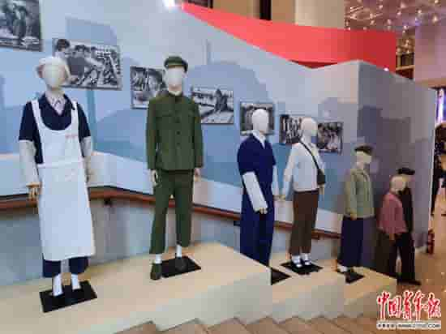
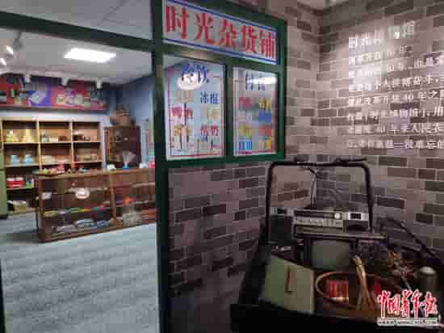
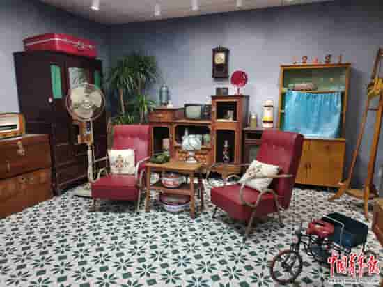
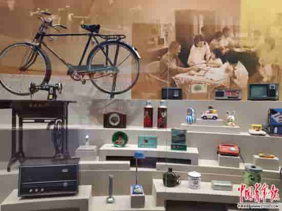
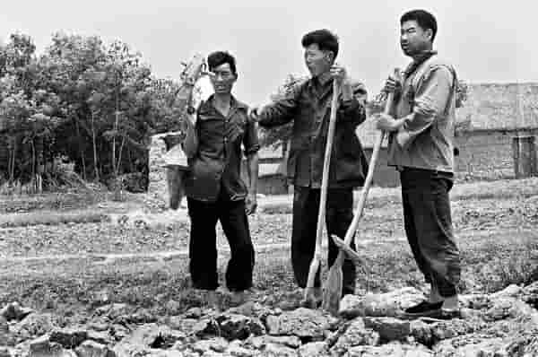
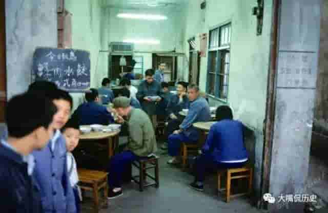
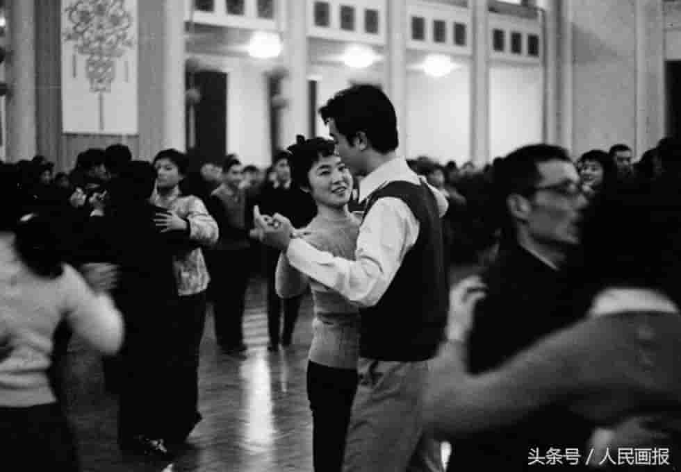
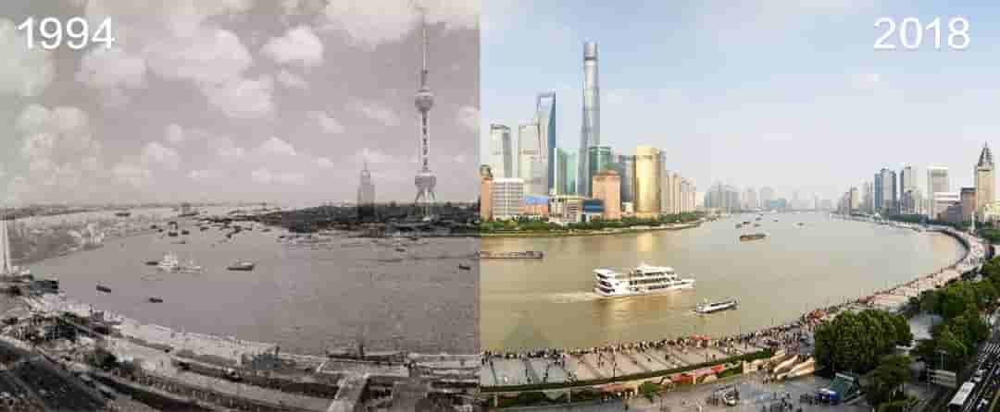

影像录
1978年后，改革开放的春风也摇曳着人们的
衣衫，喇叭裤、蝙蝠衫、棒针衫等外来的“奇
装异服”得到年轻人的青睐。而随着中国纺织
工业的发展，新事物涤纶服装开始流行，“的
确良”衬衫、碎花裙，成为上世纪80年代时髦
男女的首选。

中国人的年夜饭，是一种独特的文化传承。
信奉“民以食为天”的中国人，在这一顿饭
中寄予了一年中最盛大的期待。从满足温
饱到丰盛美味，再到追求营养健康，一餐一
饭的细节，堪称“舌尖上的改革开放”。

“每一片菜叶都是拿宣纸染色而成，用轻
土做白菜芯，再把一片片菜叶按真实生长
形态贴上去；四合院的瓦是一片一片按照
尺寸裁剪、上色、 做旧，像盖房子一样
覆盖上去。

46年来，全国居民人均可支配收入从1978年的
171元增长到2017年的25947元，扣除物价因
素，实际增长22.8倍。收入高了，最直观的表
现可能就是家中的物件更新换代。

览发展
继续挨饿还是另谋出路？1978年11月24日晚上，
安徽省凤阳县凤梨公社小岗村的18位农民做出了
一个勇敢且伟大的壮举——“包产到户”，由此开创
了我国家庭联产承包责任制的先河。最终，天遂
人愿，第二年秋，小岗村粮食大获丰收。

70年代末一碗水饺两毛钱？！！人民大会堂前的巨幅列宁像和斯大林像。
五星帽，军绿衣服，军挎……这是那个时代的时尚。那时候已经可以私人
做生意了，图中登山轮的师傅现在大概已经是老富翁了吧。

1978年12月18日至22日召开的党的十一届三中全会，重新确立了解放思想，
实事求是的思想路线，果断地把党和国家的工作重点转移到经济建设上来，
并决定改革开放。由此，中国波澜壮阔的改革开放史翻开了第一页。

1990年，上海浦东开发开放
今年是新中国成立75周年
也是浦东开发开放31周年
31年间，浦东发生了怎样的变化？
同一个地点
20多年前后
却是两幅截然不同的图景
10张同景别图片
带你穿越时空
见证改革开放带来的“浦东奇迹”
